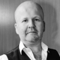
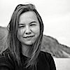
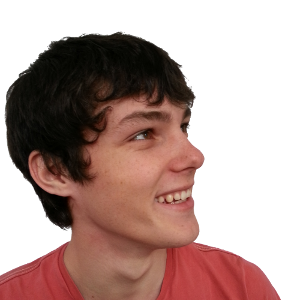
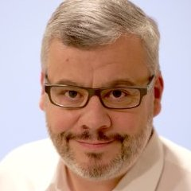
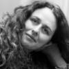

<div>

  <div class="text-center">
    <h1>Édition 2018</h1>

    <p>
      Codeurs en Seine change de lieu cette année !
      <br>
      Rendez vous le <strong>Jeudi 22 novembre 2018</strong> au <a href="https://www.kindarena.fr/fr" target="_blank">Kindarena de Rouen</a> !
      <a href="sponsors" style="display: inline-block; margin-top: 20px;">
        
      </a>
    </p>

    <div class="buttons-group">
      <a href="sponsors" class="button">
        Devenir Sponsor
      </a>
    </div>
  </div>

  <div class="row" style="margin-top: 20px;">
    <div class="col-1-2 text-center">
      <a href="sponsors" style="display: inline-block; margin-bottom: 20px;">
        
      </a>
    </div>
    <div class="col-1-2">
      <p>
        Codeurs en Seine est une <strong>journée de conférences gratuite</strong> qui se déroule à Rouen, pour découvrir, <strong>apprendre et partager</strong> autour du <strong>monde du développement</strong>.
      </p>
      <p>
          Cette année nous vous attendons nombreux le <strong>22 novembre 2018</strong>. Nous espérons que vous serez <strong>plus de 800 au Kindarena</strong> pour participer à cette journée !
      </p>
    </div>
  </div>
  <div class="row" >
    <div class="text-center">
      
      
      
      
      
      
    </div>
    <div class="text-center" style="font-size: 80%;"><em>Quelques orateurs des éditions précédentes</em></div>
  </div>
  <div class="row" style="margin-top: 20px;">
      <p>
        Suivez nous sur <a href="https://twitter.com/codeursenseine" target="_blank">Twitter</a>, <a href="http://facebook.com/codeursenseine" target="_blank">Facebook</a> ou <a href="https://fr.linkedin.com/company/codeurs-en-seine" target="_blank">Linkedin</a> pour connaître rapidemement la date
d'ouverture des inscriptions.
      </p>

    </div>
  </div>
  {% include 2018/mailchimp.html %}
</div>
